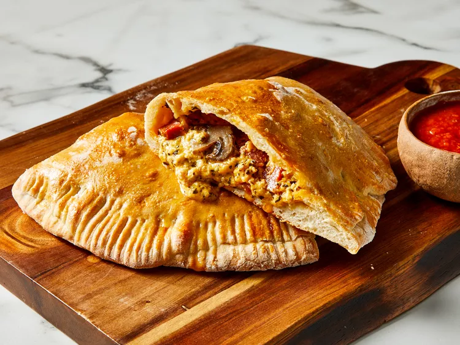

Real Italian Calzones 
A calzone is a savory Italian turnover. It traditionally consists of a cheesy filling in a leavened dough and is served with marinara sauce on the side. The calzone originated in Naples in the 18th-century. Calzones have Italian origins and are sealed with a fork. The sauce is traditionally served on the side.
Slow Cooker Chicken Tacos

These easy slow cooker chicken tacos are easy to make with just 3 ingredients in your crockpot. Spoon the filling into warm tortillas for a very tasty meal any day of the week. Here’s a brief overview of what you can expect when you make slow cooker chicken tacos: Season the chicken, place it in a slow cooker, and pour the broth over the chicken. Cook on Low for 6 to 8 hours, then shred the chicken before serving.
Reuben Sandwich

A Reuben is a grilled sandwich featuring corned beef on rye bread. The Reuben is a menu staple in Jewish-style delicatessens, but it's not technically kosher because it combines meat and cheese. A traditional reuben sandwich consists of thinly sliced corned beef, Swiss cheese, and sauerkraut on rye bread slathered with Russian or Thousand Island dressing.